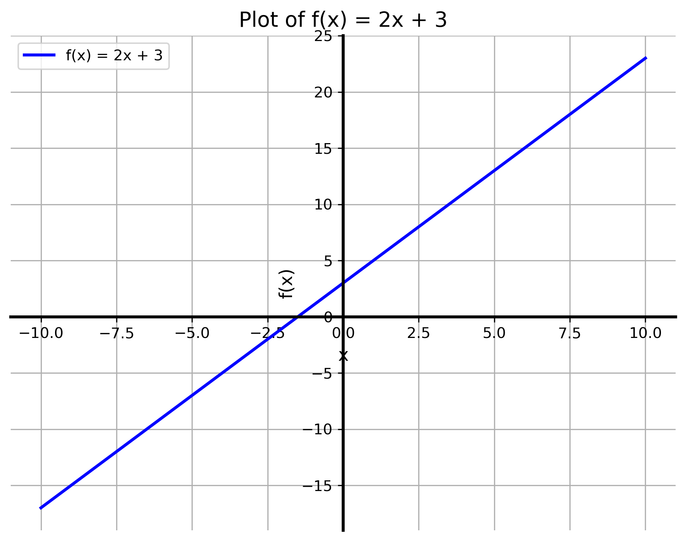

Example 1.6.1.
Solution.
Domain: All real numbers, \(x \in \mathbb{R}\) for any polynomials.
Finding the Range: let
\begin{equation*}
f(x) = y= 2x+3
\end{equation*}
Now, obtain \(x\) interms of \(y\) as
\begin{equation*}
y-3 =2x \, \Rightarrow \, x= \frac{y-3}{2}
\end{equation*}
Since, this is also a polynomials, \(x \) ranges over all real numbers.
Range: All real numbers, \((-\infty, \infty).\)
